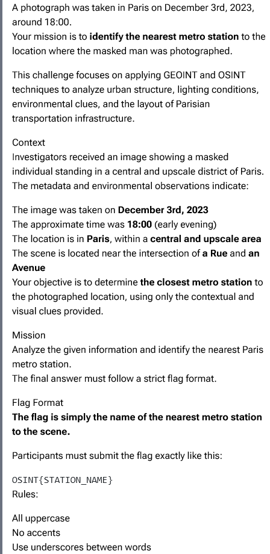

Find the Masked Man
CTF · ctf.osint.industries
Challenge Overview

The goal of this challenge was to determine the nearest metro station to the location where a masked individual was photographed. The challenge provided a few clues, including that the photo was taken in Paris on December 3, 2023, around 18:00, in a central and upscale area near the intersection of a Rue and an Avenue.
The flag format required the name of the metro station in all uppercase letters with underscores between words.
Initial Analysis
I started by looking at the photograph and identifying any clues that could help narrow down the location. The building in the background had the classic Haussmann-style architecture commonly found throughout central Paris. The rounded corner building, wide streets, and commercial storefronts suggested that the photo was taken in one of the more upscale parts of the city.
I also noticed that the scene appeared to be at a large intersection rather than a small side street. Since the challenge specifically mentioned an intersection involving a Rue and an Avenue, I focused on finding locations that matched that description.
Finding the Location
One of the most useful clues came from examining the storefronts in the image. After zooming in and looking more closely, I was able to identify a word ending in "rie" and "Julien." This clue led me to search for businesses in central Paris that contained that name.
Using Google Maps and OpenStreetMap, I located Maison Julien in central Paris. I then compared the surrounding streets and buildings to the photograph. The area matched several key features, including the shape of the intersection, the corner black-colored building, and the overall layout of the streets.
The location was identified near the intersection of:
- Avenue Franklin Delano Roosevelt
- Rue du Commandant Rivière
This intersection matched the clues provided in the challenge, including the meeting of a Rue and an Avenue. The surrounding buildings, storefronts, and street layout closely matched what was visible in the photograph.
Verification
To verify the location, I compared satellite imagery and street views with the photograph. The curved corner building and nearby street layout matched the scene very closely. The surrounding businesses and overall appearance of the area also matched the clues provided in the challenge.
After confirming the location, the final step was identifying the nearest metro station.
Identifying the Metro Station
Looking at the map of the area, I found that the closest metro station was Saint-Philippe-du-Roule. The station is located only a short distance from the identified intersection and matched the challenge requirements.
The station name was then converted into the required flag format by making all letters uppercase and replacing spaces with underscores.
Flag
OSINT{SAINT_PHILIPPE_DU_ROULE}Conclusion
This challenge required using GEOINT techniques to analyze the clues visible in the photograph and identify the location. By examining the architecture, street layout, and the visible "Julien" clue, I was able to narrow the search to the intersection of Avenue Franklin Delano Roosevelt and Rue du Commandant Rivière in central Paris. After comparing the location with map data and nearby landmarks, I determined that the closest metro station was Saint-Philippe-du-Roule.